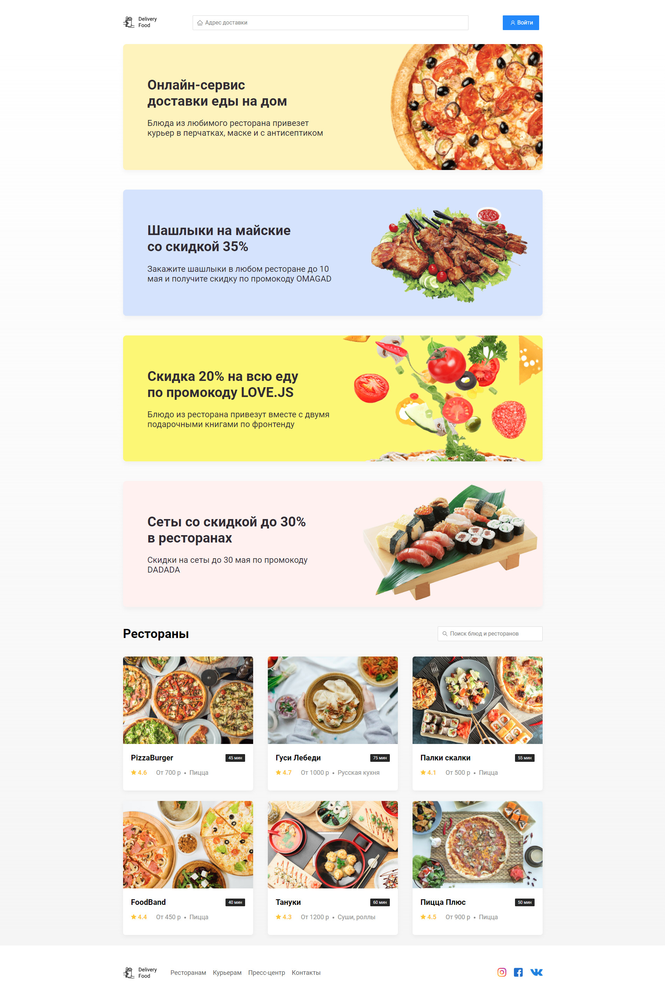

<div id="single-portfolio">
	<div id="portfolio-details" class="container">
		<a class="close-folio-item" href="#"><i class="fa fa-times"></i></a>
		
		<div class="row">
			<div class="col-sm-9">
				<div class="project-info">
					<h3>О проекте</h3>
					<p>Проект создавался для службы доставки в Краснодаре. При
						 добавлении любой CMS получается готовый и работающий бизнес.
						 Красивое оформеление акций, добавление промокодов и отдельные
						 вкладки ресторанов позволяют вывести максимальную прибыль из
						 вашего бизнеса.</p>
				</div>
			</div>
			<div class="col-sm-3">
				<div class="project-details">
					<h3>Детали проекта</h3>
					<p><span>Дата:</span> 14 апреля 2020</p>
					<p><span>Тэги:</span> #delivery, #catalog</p>
				</div>  
			</div>
		</div>
	</div>
</div>